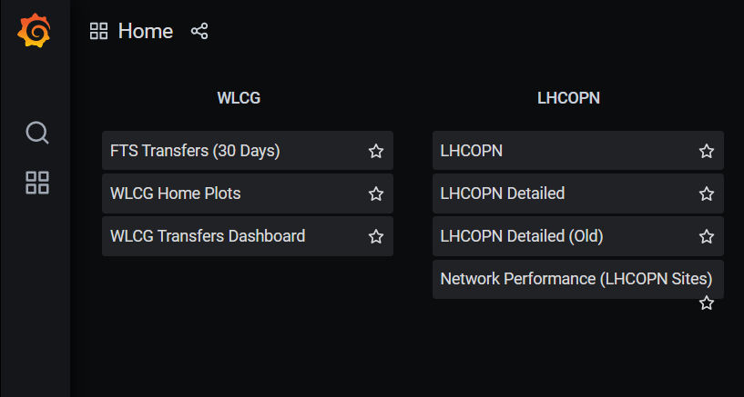
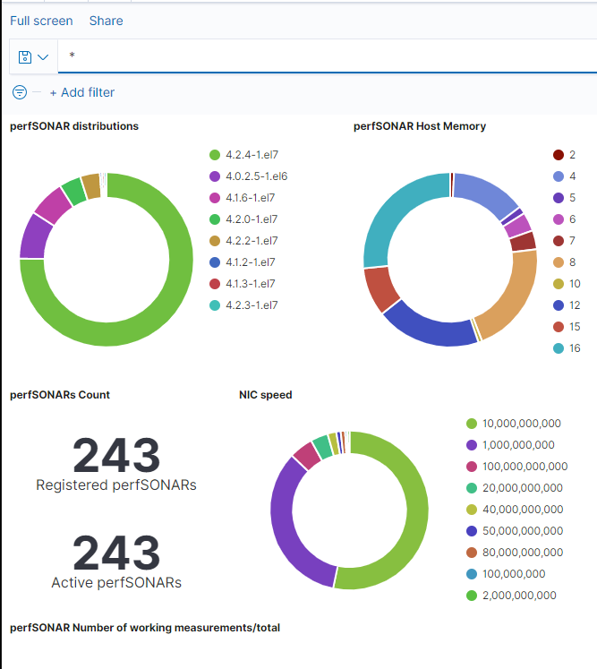
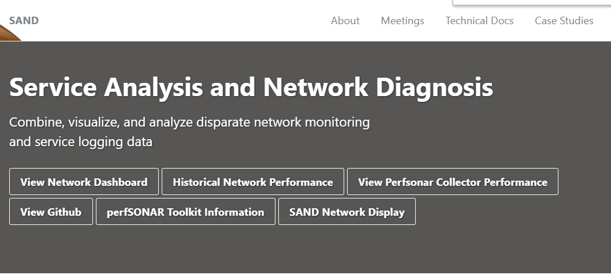
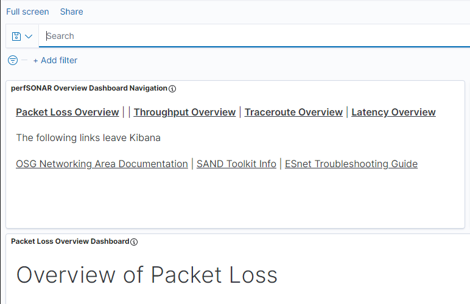

OSG/WLCG perfSONAR Toolkit Info Page

The perfSONAR Toolkit Information Page
Analytics and Dashboards
WLCG Grafana Network Dashboards
This is the WLCG/OSG Grafana dashboards hosted at CERN

OSG perfSONAR Infrastructure details on a Kibana Dashboard
This is the OSG/WLCG perfSONAR Infrastructure dashboard

The SAND Project focused on networking analytics for OSG and WLCG
This takes you to SAND project webpage

OSG/SAND/WLCG ELK Network Dashboards
This is the OSG/SAND/WLCG ELK network dashboards
OSG Overview of Packet Loss Kibana Dashboard
The Overview of Packet Loss Kibana dashboard

The MEPHI Traceroute Visualizer using our OSG/WLCG traceroute measurements
This takes you to our MEPHI collaborators traceroute visualization tool for OSG/WLCG perfSONAR traceroutes

Contact us about this webpage